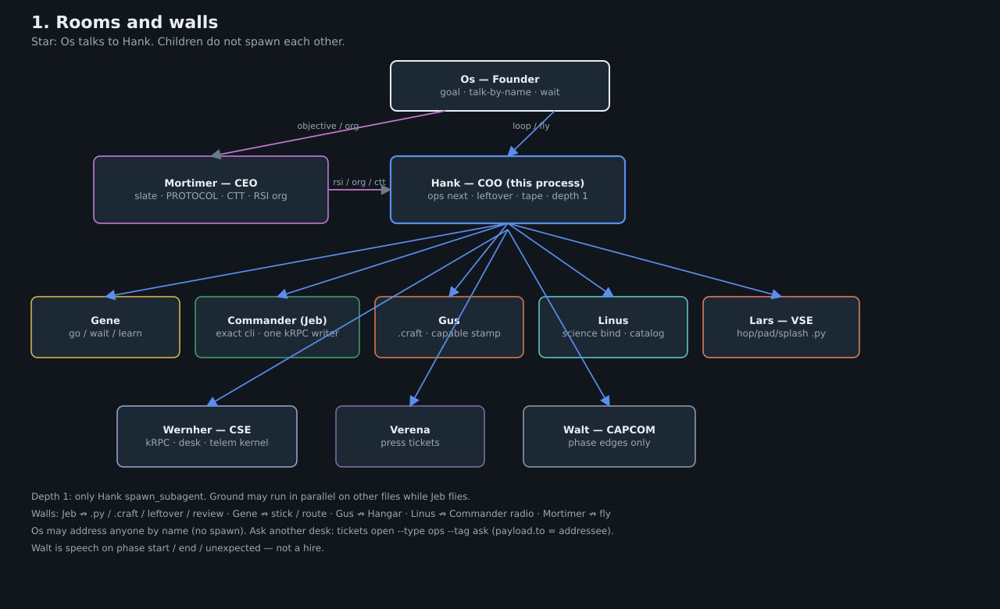
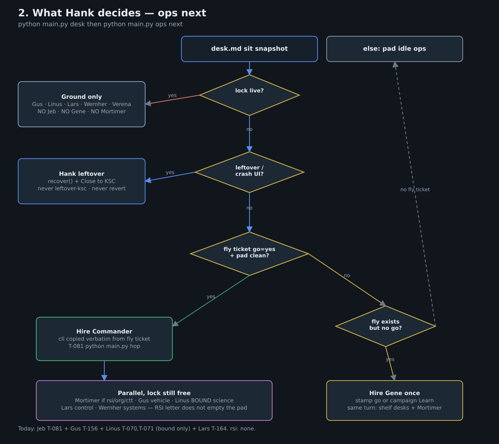
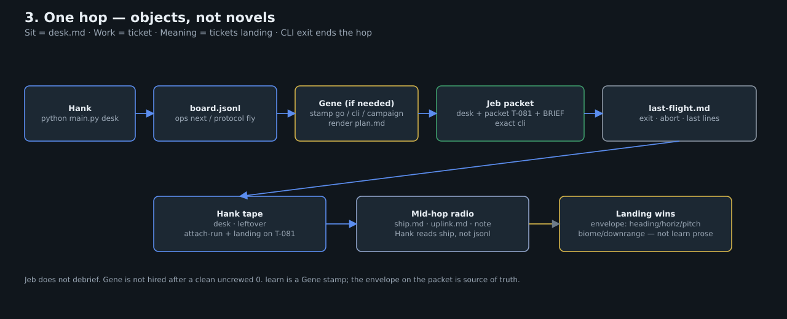
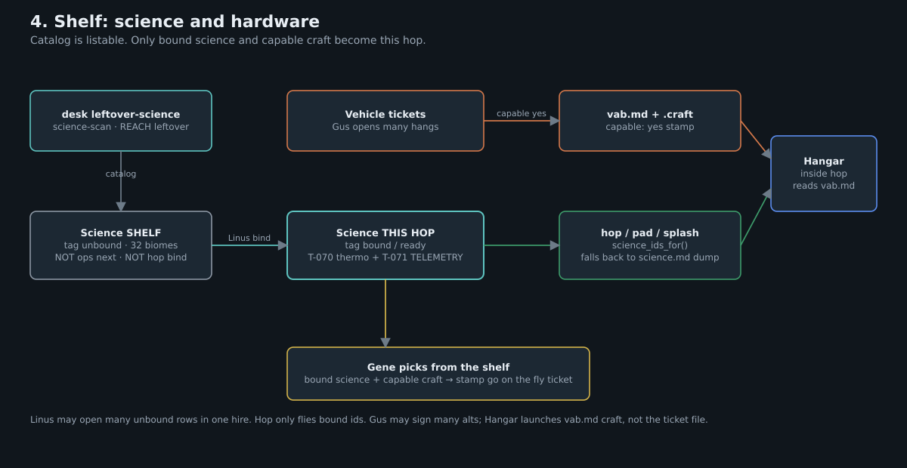
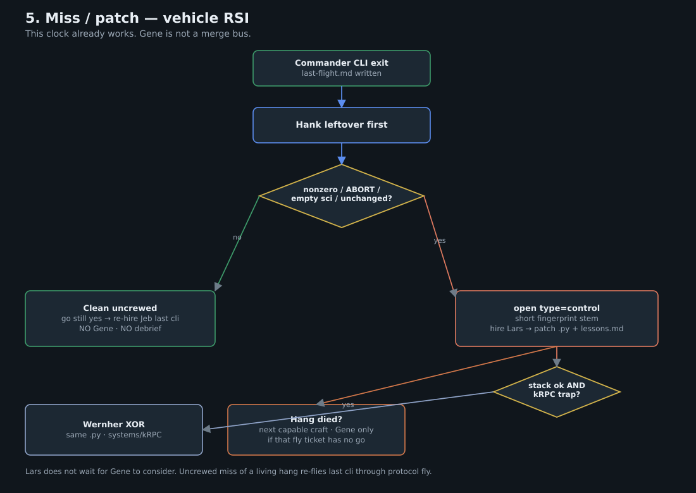
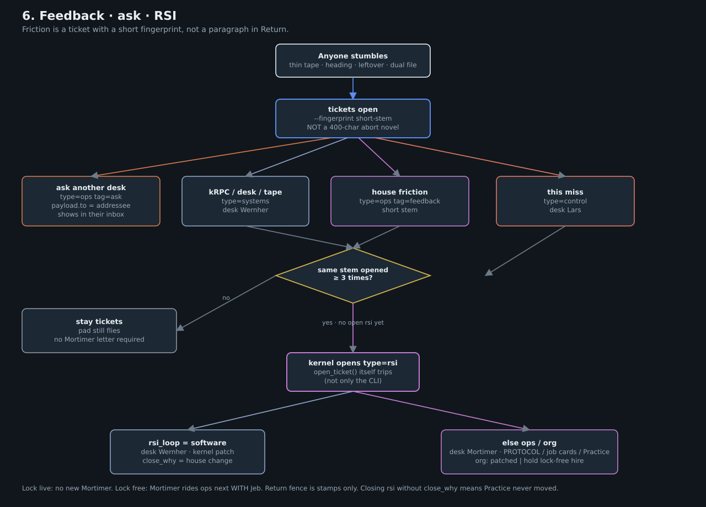

Local SVGs only. No scripts, no fonts, no CDN. Star org: Os talks to Hank; children do not spawn each other. The bus is tickets + desk.md + landing envelope. RSI is a fingerprint count on open, not a paragraph.





